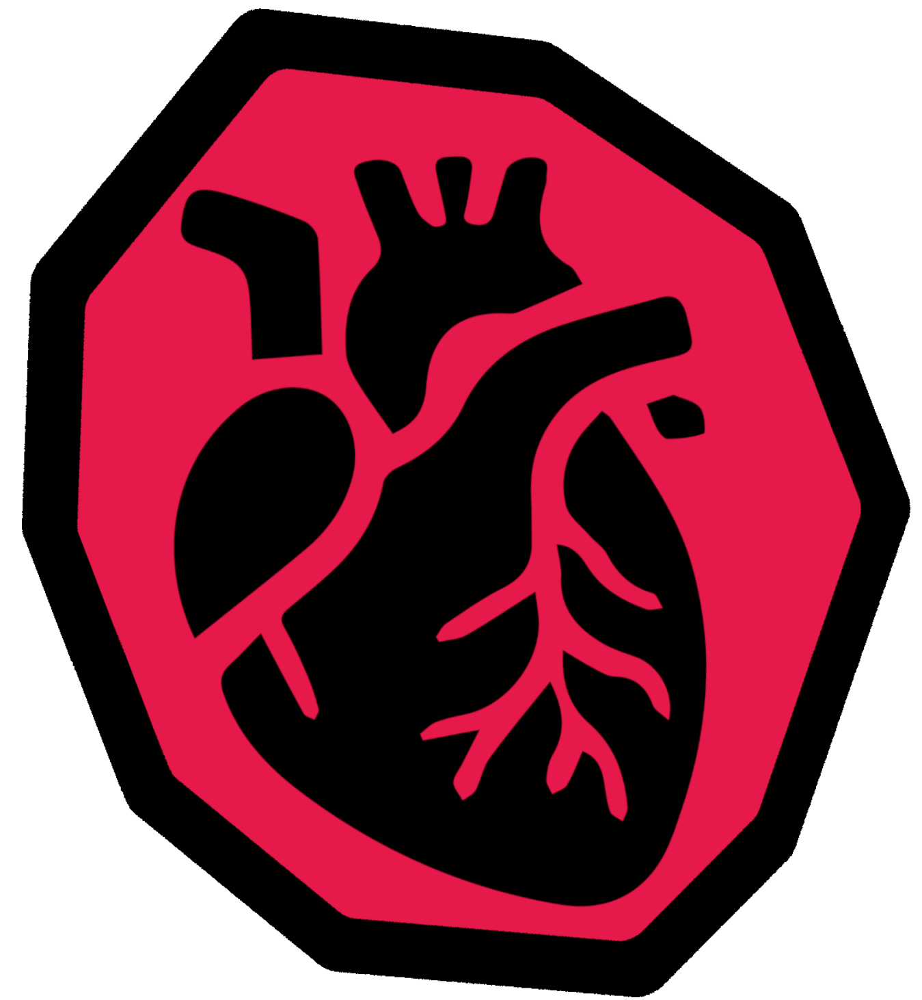

Keystones

Keystones are pieces of Tartarus that it blesses and empowers the living with. Some of these are the creatures of folklore and myths that have been twisted by Tartarus into its own design.
Kaiju are the massive creatures monsters created by Tartarus whilst Monstrosities are the more human variety. These Demons are some of the creatures of folklore and myths that have been twisted by Tartarus into its own design.
Vampore
One such Keystone is the Vampore. In extremely rare cases a lump of iron that has tasted blood will hunger for more. The ore will attempt to bond with a sentient blooded creature that touches it. If successful the creature will become its RENFIELD. Although the Vampore can drink any blood, it can only give power to its Renfield if it consumes blood from the same species as the Renfield.
RENFIELD
4 HP | TAC:0 | FRC:+1 | RFX:0 | CRE:+1
- Flunitrazepam powder, can be added to a beverage to knock-out the consumer (1 use)
- A large syringe with dual function
- First sedates the target
- Extracts large quantities of blood
- 10 pint iron cannister connected to syringe, contains Vampore
- Attractive and physically fit due to the power of the Vampore
- Charming and cunning
Thrall: The RENFIELD follows the orders of the Vampore with the promise of power. They use their new physical and social charms to lure victims to quiet and unseen places. When they have fed the Vampore 10 pints of blood from ten adults (same species as the RENFIELD) the RENFIELD can fuse with the Vampore to become a Vampire.
VAMPIRE
12 HP | 2 ARMOR | TAC:-1 | FRC:+1 | RFX:+1 | CRE:0
- Goldschmidt’s fervour (Sword, 1D6+1 DAMAGE, INCENDIARY)
- Renfield’s lullaby (Scalpel, 3 DAMAGE, STUN)
- Iron skin (2 ARMOR, accessory)
- Magnetic manipulation powers (only works on iron and iron alloys)
- Levitation abilities
- Thirsty and power hungry
IRONHEART: When a RENFIELD fuses with a Vampore its heart is replaced with the Vampore. This new heart of Iron ore beats and hungers for more blood. The VAMPIRE gladly drinks more blood to retain their power. If the VAMPIRE is brought to 0HP they will rise again. This can be prevented by removing their ore heart or destroying their body so no living flesh is left around the ore heart.
ASTROPHOBIA: The light from the sun and moons weaken the VAMPIRE. These are The Eyes of Nyxmera, sworn enemy of Tartarus. Whilst exposed to this light the VAMPIRE has the HP and stats of a RENFIELD and they cannot use their BOSS MOVES. However, they still retain their IRONHEART skill. Due to this they commonly descend into the DOT either joining and/or feeding off DOT raiders.
DISARM (BOSS MOVE): The VAMPIRE disarms all iron-based weapons. This involves disassembling guns and creating a magntised ball containing all the weapons. This ball dissipates when the VAMPIRE reaches 0HP or releases this ability.
INCENDIARY weapon tag: When damage is dealt, this weapon also deals 2 DAMAGE to anything within firespreading range. Deals double DAMAGE to plants. (F:UE)
STUN weapon tag: Those damaged by this weapon cannot move or act until their current HP changes. (F:UE)
VAMPORE BLADE
If the VAMPORE is used to forge a bladed weapon the weapon will gain the following tag.
BLOODDRINKER weapon tag: If you have blood, after landing a successful attack on a creature with blood you can allow the blade to drink the enemies blood. You gain 1D3 HP, keep track of how much HP you gain this way during a mission. Each time you heal you have a X-in-1D6 chance of gaining the VAMPIRE trait, the weapon forming into an iron heart and replacing your heart. X equals the amount of HP you have gained in the current mission -4.
Bezoar
A Bezoar of Tartarus forms around a stone blessed by Tartarus. The creature in essence becomes the Bezoar and they can be regenerated with their mind, body, and spirit in tact. However, the Bezoar must be in a stomach and requires energy from food for regeneration. These Bezoars each have 10 HP and 3 ARMOR.
If another creature eats an entity’s Bezoar their is a 3-in-1D6 chance of the entity taking over the creature’s body and regenerating into their original form. Otherwise, the creature gains the TROLLKIN trait.
GOAT TROLL
9 HP | TAC:-1 | FRC:+2 | RFX:+1 | CRE:-1
- Humongous scrap club (2D6, FRAGILE)
- Large horns (1D6 DAMAGE)
- Large hunched humanoid goats (height of truck/lorry)
- Ravenously hungry herbivores
- Dim and friendly but forget others don’t regenerate like them
PUGNACIOUS: Trolls see brutal combat as a family fun time activity due to their lack of pain and regeneration. At the start of their turn they regain 1D6 HP, even if they are at 0HP. Damage by fire or acid takes a day of rest and cutting of the affected parts to heal from. They only truly die if their BEZOAR is removed and destroyed.
FRAGILE (weapon tag): Breaks on a failure or partial success, or when a 6 is rolled on a damage dice. On a hit when it breaks remove the highest rolled damage dice.
TROLL VULTURE
14 HP | TAC:1 | FRC:+1 | RFX:+1 | CRE:0
- Claws (1D6 DAMAGE)
- Unnaturally large vulture with the wingspan of a paraglider (12 metres)
- Thick legs for the TROLLS to grip onto
- Only eat dismembered TROLL parts
MOULTER: After eating the severed limbs of the fighting TROLLS normal vultures transformed into TROLL VULTURES. The TROLL VULTURES became massive and somewhat gained the TROLL’s regenerative ability. They now act as the flying steeds of the TROLL’s, a meal never long away. At the start of their turn they regain 1D3 HP, they die if they reach 0HP. They constantly moult but quickly grow back there feathers, creating a smokescreen of feathers when descending on the prey and foes of the TROLLS.